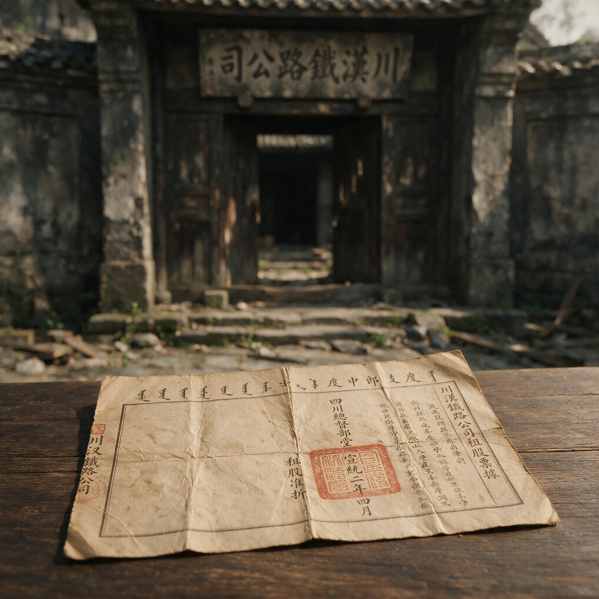

第 21 章
袍哥公口里的新政权
民国元年的春天，成都少城半边桥街的居民清早推开铺板，发现街口那间茶馆的门楣上多了一块木牌。木牌是新的，杉木，刨得不算精细，漆面还泛着湿气。
牌子上四个墨字——“大汉公口”。字写得粗大，墨迹浸进木纹里，像是用茶馆里记账的秃笔写上去的。挂得也不讲究，就在原来“茶”字幌子的旁边，两根铁钉钉进砖缝，牌子微微向右歪着。街坊们站在石板路上看了一会儿，没人出声。这间茶馆他们天天路过，掌柜姓陈，五十来岁，平日里只卖盖碗茶和叶子烟，从不招惹是非。
但现在，他的门楣上挂出了袍哥的公口牌子。而就在几天前，顺江而下回到乐山的刘永福，怀揣着那张已经失去承诺的川汉铁路总公司租股票据，在码头上或许也瞥见过类似悄然变化的招牌，只是那时他心事重重，并未在意。
袍哥在成都不算秘密。四川的哥老会组织从乾隆年间就有了，码头上、场镇上、盐井边，到处都有他们的香堂。但在省城成都，袍哥公口一直处于一种半明半暗的状态——官府不正式承认，但也不认真查禁

发黄租股票据特写与旧址门前景
AI 生成插图，非史实影像。
；街面上的人知道哪间茶馆有袍哥摆香堂，但不挂在嘴上说。辛亥年以前，成都城里公开挂牌的公口几乎没有。茶馆就是茶馆，茶客里有没有袍哥，那是茶客自己的事。现在牌子挂出来了。
半边桥街这块“大汉公口”的木牌不是孤例。接下来几天，成都城里像雨后冒菌子一样，一夜之间冒出了几十块公口木牌。东大街的“东成公口”、南门三巷子的“南义公口”、北门金华街的“北正公口”、青石桥的“青石公口”……有的挂在茶馆门口，有的钉在杂货铺的檐柱上，有的干脆立在街边的土地庙旁边。木牌的形制大同小异：杉木板，墨字，写着某“公口”或某“公社”，有的还注明“第几支”或“第几排”。字迹有好有坏，看得出是各找各的写字先生。挂牌的方式也各式各样——讲究一点的用铁钉，马虎一点的用麻绳吊在屋檐下，还有一块牌子据说是用饭粒粘在门板上的，第二天早上就掉在地上，被过路的鸡踩了两脚。
这些木牌的出现，意味着成都的袍哥从半地下走上了街面。事情要从半年前说起。辛亥年九月，赵尔丰在督署辕门前下令开枪，成都血案之后，四川各地的同志军像开了闸的水一样涌向省城。
同志军的成分很杂——有各州县的团练，有保路同志会的激进分子，有被租股亏蚀激怒的农户，也有本来就半公开活动的袍哥武装。在川西平原上，袍哥和团练的边界本来就很模糊。一个县里的团总往往就是当地袍哥的舵把子，团丁里十个有六个在帮。保路运动闹起来以后，各州县的袍哥公口以“保路同志军”的名义拉起队伍，扛着土枪梭镖往成都开。这些队伍打着“保路”的旗号，但组织方式完全是袍哥的——大爷发令，管事带队，弟兄们按“排”编制，粮饷自筹，纪律靠帮规维持。
同志军围成都围了两个多月。赵尔丰交权以后，各路同志军陆续开进成都。这些队伍进城的时候，成都市民夹道欢迎，茶馆里的说书先生编了竹枝词唱“同志军来百尺楼，红旗高挂满城秋”。但欢迎归欢迎，实际问题很快就浮上来：同志军进来了，怎么安置？
最先暴露的是地盘问题。成都城里的公共空间有限，各路人马进城以后各自抢占驻扎点。少城一带被温江、郫县的队伍占了，东门外落进了龙泉驿的队伍手里，北门校场坝驻扎着新都、金堂的人马。
每一路都有自己的公口背景。温江的队伍是“西河公口”的底子，龙泉驿的队伍跟“东山公口”有渊源。队伍驻扎下来以后，公口的牌子就跟着挂了出来。驻扎在哪条街，哪条街的茶馆就挂上这家公口的木牌。地盘和牌子之间，有一种不言自明的对应关系。
饷械分配的矛盾比地盘更尖锐。同志军进城时带进来的枪械，大多是各州县自己凑的。有前膛枪，有鸟铳，有梭镖，有马刀，还有一些从巡防营手里缴来的九子毛瑟。数量不多，质量参差，分配全看各路人马的实力和关系。成都军政府成立以后，尹昌衡以都督名义下令各同志军“听候编遣”，但编遣的前提是造册——枪有多少、人有多少、粮有多少，先报上来。各路人马报上来的数字五花八门。有的队伍把梭镖也算作“枪械”，有的把沿途跟来的民夫也算作“兵员”，有的报出的粮饷数字明显夸大，意图在收编谈判中多占份额。造册的人坐在军政府的临时办公处——原来的督署衙门里，面对一堆墨迹未干的清册，发现根本没法核实。
这些队伍没有正规军的建制，没有花名册，没有军需账本。兵不识官，官不识兵。一个自称“标统”的人可能手下只有百把人，一个只报了“队官”的人可能实际控制着三五百条枪。军政府派下去点验的委员到了驻地，往往被客客气气地请进茶馆喝茶，茶喝了半天，正事一句也谈不拢。茶馆里坐着的人，个个自称“在帮”，委员要查枪，他们说枪是弟兄们自己带来的私产；委员要查人，他们说人都是自愿投军的义士，来来去去，没有定数。
袍哥的组织逻辑和正规军完全不同。正规军靠名册、饷银、军法来维系，袍哥靠的是香堂、帮规、义气。一个公口的大爷对手下弟兄的控制力，不来自官方的委任状，而来自他在帮内的辈分、人脉和解决纠纷的能力。这种控制力无法被军政府的文书系统识别和吸纳。军政府可以给一个袍哥大爷发一张“标统”委任状，但这张委任状在他手下弟兄眼里，远不如他在香堂上磕头时排的座次有分量。
尹昌衡看得很清楚。这位年仅二十七岁的四川都督，自己就是彭县人，对川西坝子的袍哥门道并不陌生。
他接手的是一个烫手的山芋：成都城里驻扎着几万同志军，名义上归军政府节制，实际上各听各的大爷号令。军政府的财政已经见底——赵尔丰留下的藩库银两，经过几个月的消耗，所剩无几。成都的商户经历了罢市、兵乱和政权更迭，税收几乎断绝。军政府手里能用的资源，就是那几万条枪和枪后面的人。但这些人不属于军政府，他们属于各自的公口。
尹昌衡的选择，在当时和后来都引起了很多争议。他没有试图用正规军的那一套去改造同志军，而是反过来——他自己走进了袍哥的系统。民国元年二月，成都的报纸登出一条消息：尹都督在少城某处香堂正式“在帮”，加入袍哥，自封“大汉公”舵把子。
这条消息的细节至今难以完全核实。不同的记载对尹昌衡入帮的时间、地点和仪式说法不一。有的说是在少城公园旁边的关帝庙里摆的香堂，有的说是在东较场的大操场上公开举行的。仪式本身也有不同版本：一种说法是尹昌衡按袍哥规矩磕了头、喝了血酒、拜了关公；
另一种说法是他没有走全套仪式，只是以都督身份宣布“大汉公”成立，自任舵把子，各公口大爷到场致贺。不论哪种说法更接近事实，结果是一样的：四川军政府的最高长官，成了成都袍哥的“总舵把子”。
“大汉公”的牌子随后挂了出来。这块牌子和半边桥街茶馆门口的那块不同——它挂在军政府衙门的辕门旁边，木头更厚，字是请成都城里最有名的写字先生题的，还上了一道清漆。牌子的形制介于官府的匾额和公口的木牌之间：大小接近匾额，但材质和样式又是公口的路子。这个模糊的形制恰好说明了“大汉公”的模糊性质——它既是尹昌衡个人的袍哥身份标识，又是一个半官方机构。
尹昌衡以“大汉公”舵把子的名义，召集各公口大爷到军政府开会。会议的场面，当时成都的报纸有简略报道：各公口大爷坐了两排，尹昌衡坐在中间，以“自家弟兄”的身份讲话，要求各公口协助军政府维持治安、催收粮税、编练队伍。这不是正规的军政会议。没有会议记录，没有决议文件，没有正式的委任程序。
但它的效力不来自公文，而来自帮规。各公口大爷回去以后，对自己手下的弟兄说：都督是“自家弟兄”，军政府的事就是公口的事。
收编就这样开始了。收编的具体方式，各公口并不统一。在成都城内，“大汉公”直接控制了几条主要街道的治安。原来由巡警负责的街面巡查，逐渐被各公口派出的“弟兄”替代。这些“弟兄”没有警服，臂上缠一块白布，上面盖着公口的戳记，就算是执法凭证。他们管的事情很杂：查赌、禁烟、调解纠纷、催缴捐税。茶馆里有人吵架，以前是找保甲长，现在找公口弟兄。商户不交税，以前是巡警上门，现在是公口弟兄上门。上门的弟兄腰间别着短枪，说话客气，但话里的分量商户掂得出来。
在东大街做绸缎生意的王掌柜，民国元年春天遇到了这样一件事。他的铺子被摊派了一笔“军需捐”，数目不小。王掌柜去找商会，商会的人告诉他，现在捐税的事归“东成公口”管，商会插不上话。王掌柜只好去东大街那间挂着“东成公口”木牌的茶馆，找到公口的管事。
管事翻出一本毛边纸订的簿子，上面密密麻麻记着各家商户的摊派数额。王掌柜看了一眼，发现簿子上既没有官府的印章，也没有统一的税则，只有毛笔写的数目和管事的花押。他问管事，这捐是按什么章程摊的。管事把簿子一合，说：“按公口的章程。”
王掌柜不敢再问。他交了钱，拿到的收据是一张白纸条，上面盖着公口的戳。这张白纸条后来被他小心地夹在账本里，和那些印着“四川军政府财政司”红印的官式收据放在一起。两种收据并排躺在账本里，纸张不同，印章不同，背后的权力也不同。王掌柜未必能说清楚这中间的差别，但他知道：官府的收据有衙门可找，公口的收据没有衙门可找——公口本身就是衙门。
成都以外的州县，收编的逻辑更直接。各州县的同志军原本就是当地袍哥公口拉起来的队伍，军政府收编不过是把“同志军”的旗号换成“巡防营”或“保安团”的番号。人还是那些人，枪还是那些枪，大爷还是那个大爷。换的是名义和饷源——以前队伍自己筹饷，现在军政府拨一部分，不够的部分仍然自己筹。自己筹的部分，公口有完全的自主权。川南某县的一份税收账册，记录了这种变化。这份账册是县财政科在民国元年秋天编制的，里面列了当年的各项税收和支出。
在“正税”一栏下面，多出了一项“附捐”，注明是“奉本县公口令，每粮一斗加收银二钱，充保安团饷”。这笔附捐的征收，没有经过省财政司核准，没有列入县议会的预算，甚至没有正式的公文手续。它唯一的依据，就是公口管事送到县公署的一张条子。县长照办了，因为县长知道，保安团的枪在公口手里。账册里还有一项支出值得注意：“保安团饷银”的数目，占到了全县财政支出的将近四成。这四成里，真正用于团丁口粮和枪械维护的只是一部分，另一部分去向不明。账册上的记录很模糊，只写着“公口支用”四个字。这四个字涵盖了什么，县财政科的人不知道，也不敢问。
治安案件的变化，从另一个角度暴露了公口权力的实质。成都附近的温江县，民国元年发生了一起斗殴致死的案子。涉案双方都是当地袍哥，分属两个不同的公口。案子报到县公署，县长不敢审——两边公口的大爷都派人来“打招呼”，话里带话地提醒县长，保安团的枪是哪个公口在管。县长把案子推到了成都，军政府批回来四个字：“自行了结。”最后是两边公口的大爷坐下来谈判，以赔偿死者家属一笔钱结案。钱由肇事一方的公口出，数目不对外公布。县公署没有判决书，没有案卷，只在治安月报里记了一笔：“某月某日，某乡民因口角斗殴致死，经公口调处了结。”
这不是司法，这是私了。但私了背后有枪杆子撑着，县长没有别的选择。尹昌衡的“大汉公”体系，在民国元年上半年达到了权力的顶峰。成都城里，公口木牌挂遍了主要街道的茶馆。各公口大爷定期到军政府开会，会议的内容从治安、税收扩展到官员任免。有记载说，当时四川一些县的知事任命，军政府会事先征求当地公口大爷的意见。如果大爷不点头，委任状发下去也到不了任。这不是制度规定，但比制度规定更有效。
袍哥公口从社会互助组织变成了税收与治安的暴力机器，这个转变发生在短短几个月之内。转变的关键不是袍哥本身的变化——袍哥的组织形式和帮规并没有变——而是外部约束的消失。在清朝，袍哥公口处于半地下状态，不是因为它们不想公开，而是因为官府有底线：公口不能公开挂牌，不能公开收税，不能公开干预司法。这些底线在辛亥年九月以后全部消失了。赵尔丰的督署衙门变成了军政府的办公处，巡警系统瓦解了，保甲制度瘫痪了，府县官员跑的跑、散的散。
成都城里唯一还能运转的组织网络，就是袍哥的公口茶馆。军政府没有选择。它手里没有足够的文官去接管基层治理，没有可靠的税收系统去支撑财政，没有正规军去替代同志军。它只能利用袍哥网络——这是四川社会在清朝两百多年里自然生长出来的组织资源，现在成了军政府唯一能抓住的东西。
但利用是有代价的。袍哥公口一旦获得半官方地位，它们自身的逻辑就开始侵蚀军政府的权威。公口征税，征来的钱军政府只能拿到一部分，剩下的留在公口手里。公口维持治安，维持的方式是帮规而不是法律，军政府的司法权被架空。公口控制军队，军队效忠的是大爷个人而不是军政府这个机构。尹昌衡以“大汉公”舵把子的身份整合各公口，这种整合建立在他个人在帮内的威望之上，而不是建立在制度之上。
民国元年三月，四川军政府完成了一次形式上的统一。此前重庆的蜀军政府和成都的大汉四川军政府并存了几个月，双方经过谈判，在三月合并为统一的四川军政府，尹昌衡任都督，张培爵任副都督。
这次合并被当时的报纸称为“川局底定”。但合并只是上层的人事安排，对基层的公口网络没有触动。重庆方面带来的军队和成都方面的同志军，各有各的公口背景，合并以后并没有真正融合。军政府的统一是纸面上的，公口的割据是实际上的。一支未被收编的同志军，在这时退守到了川南某县。这支队伍的头领姓李，原本是叙府一带的袍哥大爷，手下有几百条枪。尹昌衡几次派人去谈收编，李大爷的条件是：他的队伍不改编，他的地盘不交税，他的人事不归军政府管。
这等于要一个独立王国。谈判破裂以后，李大爷带着队伍退进了山区，占据了一个场镇，自己挂牌征税，自己设立公堂。军政府派兵去剿，兵到了山下，发现带兵的军官和李大爷是同门弟兄——剿不下去。
这个对峙的局面没有解决。它悬在那里，像一个没有愈合的伤口。军政府无力处置，因为处置需要调动军队，而军队里的袍哥不会去打自己的同门。尹昌衡的“大汉公”体系在这里暴露了它的致命弱点：依靠袍哥网络建立的统治，其内部整合是脆弱且充满暴力的。
网络可以迅速扩张，但扩张以后无法收缩。每一个公口都是一个小权力中心，大爷们在自己的地盘上有绝对权威，军政府的命令到了地盘边界就失效了。成都街头的公口木牌，在民国元年春天挂出来的时候，很多人以为是秩序恢复的标志。牌子挂出来，说明有组织在管事，总比没人管强。
但到了秋天，一些木牌开始出现变化。有的牌子被取下来换了新的，因为原来的公口被另一个公口吞并了。有的牌子旁边多了几块小牌子，写着“某某公口第几支”，说明一个公口内部在分裂。还有的牌子上被人用墨涂了字，或者被刀子划了痕——那是公口之间发生冲突时留下的记号。半边桥街那块“大汉公口”的木牌，到了秋天已经斑驳了。
漆面被雨水泡得起皮，墨字褪成了灰白色。陈掌柜的茶馆生意照做，但茶客们知道，这间茶馆已经不是陈掌柜说了算了。公口的管事坐在靠里的那张桌子上，面前摆着算盘和账簿，茶馆的收入有一半要交到公口账上。陈掌柜还是掌柜，但他只是一个掌柜了。那块木牌还挂在门楣上，微微向右歪着。
铁钉生了锈，在杉木板上洇出两道暗红色的印子，像两道干涸的血迹。街坊们每天从牌子下面走过，已经不怎么注意它了。它变成了街景的一部分，和茶馆的“茶”字幌子一样平常。
但它的意义和“茶”字幌子完全不同——它意味着这条街、这间茶馆、这条街上的人，都在一个非正式的权力网络里有了一个位置。这个网络没有宪法依据，没有法律授权，没有文官治理，但它收税、维持治安、调解纠纷、任免官员。它是政权，又不是政权。它是公口，又不只是公口。
这个模糊的状态，在民国元年的成都持续了整整一年。到了冬天，一些公口木牌开始悄悄消失。不是被官府取缔——军政府没有这个能力——而是被更大的公口吞并了。小公口的牌子取下来，换上大公口的牌子，地盘和税收随之转移。成都城里的公口版图在不断变动，像一块被反复擦写的黑板。每一次变动都伴随着茶馆里的谈判、街面上的摩擦和偶尔的枪声。枪声不密，但足以让成都市民明白：四川的政权，已经落进了一个由茶馆、香堂和枪杆子编织起来的网络里。
这个网络的每一个节点都挂着一块木牌，木牌上写着“公口”两个字。木牌挂上去很容易，一夜之间就能挂满全城。但要把它取下来，就不是一夜之间的事了。
尹昌衡在民国元年夏天离开成都，率军西征藏边。他走的时候，“大汉公”的牌子还挂在军政府辕门旁边。他回来的时候，四川的局势已经发生了变化——但那是后话了。在他离开的这段时间里，成都的公口网络按照自身的逻辑继续运转。各公口大爷在茶馆里议事，在香堂里排座次，在账本上记收支。
他们不需要尹昌衡在场，这个网络本来就不是靠一个人在运转的。半边桥街的陈掌柜，在民国元年的冬天做了一件事。他把茶馆的账本和公口的账本分开了。两本账，一本记茶钱，一本记公口提成。他用两块布分别包好，塞在柜台底下的一个木箱里。他不知道这两本账将来会怎样，但他知道它们不是同一笔账。茶钱是生意，公口提成是什么，他说不清楚。那个木箱里还放着别的东西：一张盖着公口戳记的白纸条，那是他交“军需捐”的收据。
他把收据和账本放在一起，盖上箱盖，推回柜台底下。柜台上面，茶客们还在喝茶摆龙门阵。柜台底下，那个木箱安静地躺在黑暗里，里面装着民国元年一个成都茶馆掌柜的全部困惑。但成都的困惑远不止陈掌柜一个人。半边桥街往南走三条街，是南门三巷子。
那里也有一块木牌，写着“南义公口”。牌子挂在一间茶铺的檐下，茶铺的老板姓周，比陈掌柜年轻几岁。民国元年秋天，周老板的茶铺被“南义公口”征用了三天。三天里，茶铺不做生意，摆了三天的香堂。香堂的布置有讲究：正中的墙上挂关公像，像前摆香案，案上一只铜香炉，三炷香，一对红烛。香案两边各放一把太师椅，左边坐“南义公口”的大爷，右边坐从资阳来的“西河公口”的管事。两边的弟兄分列站定，从门口一直排到街沿上。
谈判的内容，周老板没有听全。他只记得中间有两次声音高起来，又低下去。最后两边的大爷在香案前互相抱拳，事情就算了结。周老板后来听说，两个公口为的是东门外一片柴市的“抽头”归属。
抽头就是按成交额抽的佣金，数目不大，但细水长流。谈判的结果是“南义公口”让出三成，资阳那边的人撤回。没有文书，没有字据，只有茶馆里的一抱拳。这样的谈判在民国元年的成都几乎每天都在发生。有些在茶馆里谈，有些在香堂里谈，有些干脆在街面上谈。
谈的内容大多是地盘、税收、枪械、人事。军政府的法院和议会管不到这些事，也不被邀请来管。成都的公共生活被切成两层：上面一层是军政府的布告、议会的议程、报纸的社论；下面一层是公口的木牌、茶馆的谈判、香堂的座次。上面那层在说共和、宪法、民权，下面那层在说抽头、地盘、枪械、辈分。
两层之间偶尔有交集，但更常见的是各说各话。这种两层结构，正是保路运动留下的一个意外后果。保路运动最初是股东们在铁路公司里争股权，后来发展到罢市、请愿、血书，再后来是同志军围城。每一步都是地方社会在缺乏国家能力的情况下自我动员。动员的成果是推翻了赵尔丰，但动员的组织形式——袍哥公口——没有被任何正式的宪政框架吸纳。
它们从半地下走到街面，从社会互助组织变成暴力机器，不是因为它们有政治纲领，而是因为它们恰好是革命后唯一还能运转的组织。地方绅商自治网络原本是朝廷之外的动员力量，但在国家权威崩溃后，它没有发展为稳定的宪政秩序，反而被军事强人收编，演变为割据势力。
这个转变在成都街头的木牌上可以看得很清楚：木牌不是议会挂出来的，不是法院挂出来的，是公口自己挂出来的。挂出来的不是法律条文，是一个“口”字——一个开口，一个入口，一个没有边界的权力中心。租股清算的失败，在这个背景下有了更深的解释。刘永福们拿着那张依然有效却无法兑现的租股票据，找到军政府的财政科，得到的答复是“等上头的章程”。章程为什么出不来？不是军政府不想出，而是军政府手里没有兑现章程的工具。
租股清算需要三样东西：一是完整的田赋和租股记录，二是能执行清算的基层文官系统，三是能约束各方利益的法治框架。这三样东西在民国元年的四川一样都不存在。
田赋记录在战乱中散失大半，基层文官被公口架空，法治框架也是无从谈起。军政府手里只有枪杆子，而枪杆子掌握在袍哥大爷手里。用枪杆子去清算租股，等于让公口去查公口的账——这是不可能的。租股清算的无声账册，就这样被袍哥公口的有声枪杆子压了下去。近百万租股户的集体债权，在沉默中持续发酵。
他们没有暴动，没有上街，没有写血书。他们只是把票据收好，等着一个永远不会来的章程。这个等待，和成都街头的木牌一样，成了民国初年四川社会的一个固定背景。木牌挂在那里，票据压在箱底，两者之间隔着的是一个无法兑现的承诺。保路运动从铁路股权纠纷开始，走到这一步，已经离铁路越来越远了。铁路在哪里？川汉铁路的工地早就停工了，宜昌附近的铁轨弃置在路基上生锈。
但那是另一个故事。眼下成都街头的木牌，还在一天天挂出来，一天天换手，一天天在茶馆的算盘声和香堂的磕头声中，把四川推向一个军政府自己也无法控制的未来。